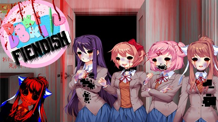

Doki Doki Fiendish
Como todos sabemos, o segundo ato do Doki Doki Literature Club nos apresentou uma série de cenas perturbadoras. Você gostou, não gostou? Você queria que fosse mais longo. Para o horror continuar. Se você está ansioso por mais arrepios na espinha, veio ao lugar certo. AVISO: Este mod pode não ser adequado para os fracos de coração. Por conter imagens muito perturbadoras.
⬇ Download